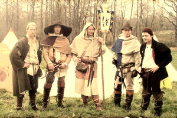

La Maisnie Champenoise ist eine mittelalterliche Theatertruppe, die Sie mit ihrem Schauspiel und ihren Animationen rund um das Mittelalter in eine andere Zeit versetzt.
Wir treten im Rahmen besonderer Festlichkeiten und Veranstaltungen zum Thema Feudalzeit auf sowie auf spezielle Anfrage von Gemeinden, Vereinen und Einrichtungen der Touristikbranche. Auch die Rahmengestaltung von Themenabenden und -festessen fällt in unser Ressort.
Wir bieten unsere Dienste Schulen und anderen öffentlichen Einrichtungen an. Unser Programm umfasst Vorträge und Animationen mit pädagogischer Ausrichtung.
Wenn Sie Kontakt mit uns aufnehmen möchten, schreiben Sie an Philippe, unseren Hellebardier: